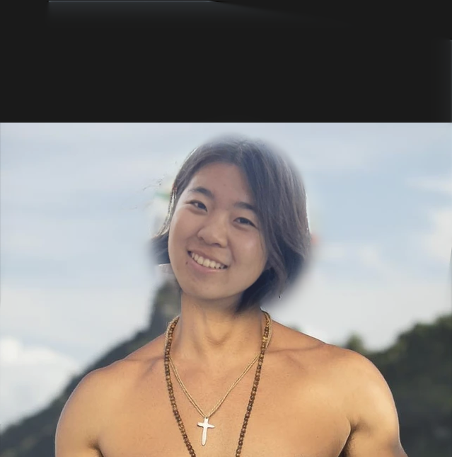

CS180: Computational Photography and Computer Vision
As part of Fall 2025 CS 180, I completed a variety of projects implementing recursive image pyramids, image filters for blurring and isolation of frequencies, autostitching photo mosaics with homography and feature detection, NERF, and diffusion models.
Tools used Python, Scikit-image, Pytorch
